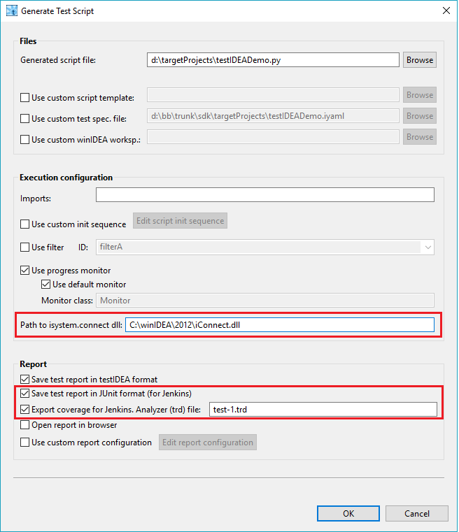
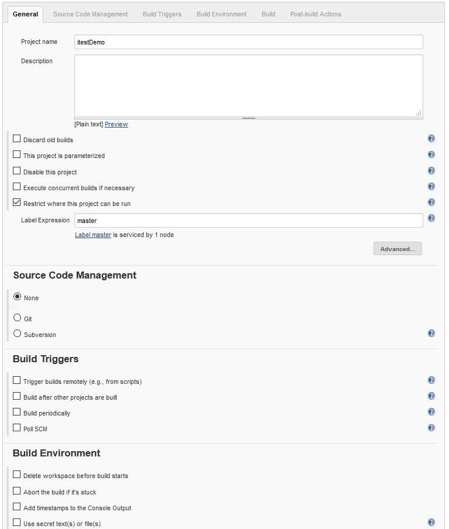

ConnectionMgr::connectMRU() call in Python script can
not find and start the last winIDEA started with normal user account.
The other solution to this problem includes
setting of an environment
variable to point to winIDEA installation directory, for example:
SET ICONNECT_PATH="C:\winIDEA\2012\iConnect.dll"


Name of Test report XMLs (JUnit file) must be the same as name of test report configured in testIDEA, but with extension .junit.xml.
Click the build number to get menu with build details, including console output and test result.
Click OK to get he next configuration screen.
Connect the agent, then run the project.
The information shown in this report depends on coverage export configuration. See section Analyzer | Coverage, group Export configuration in testIDEA.